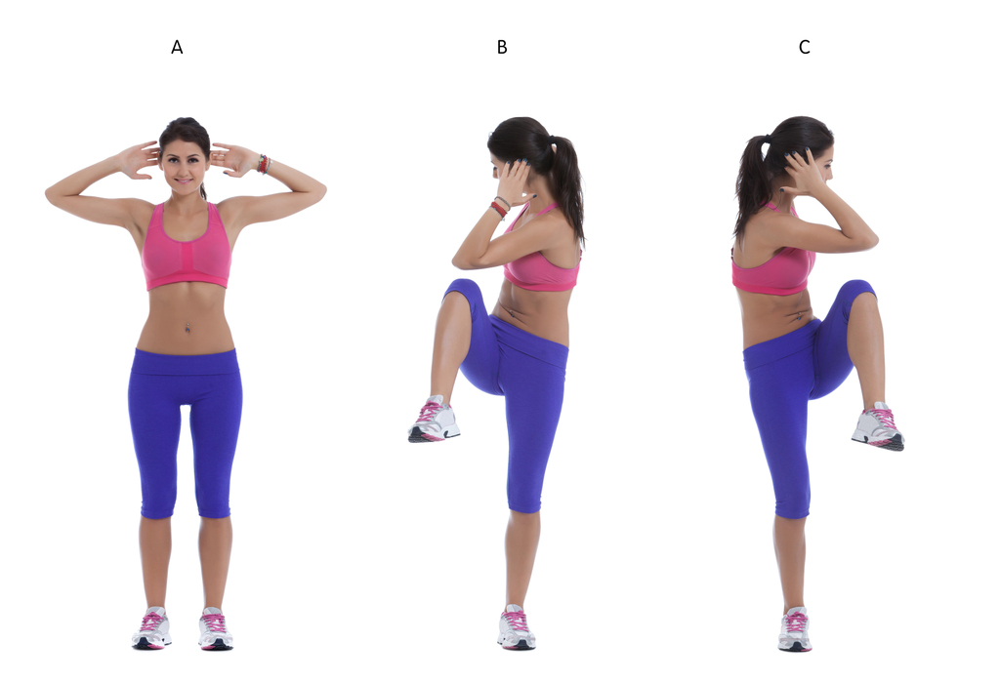
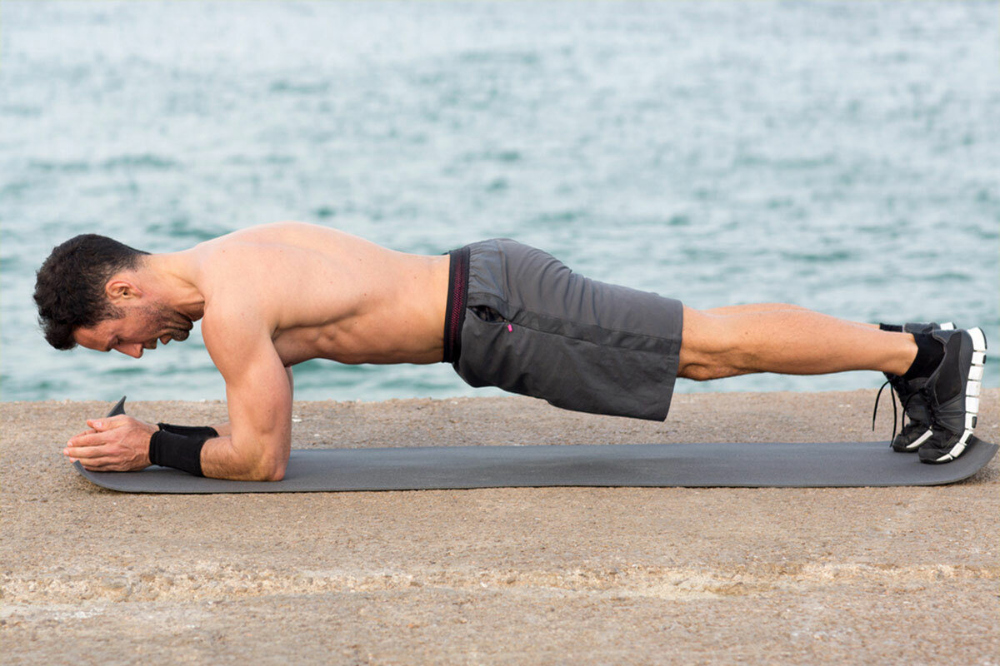
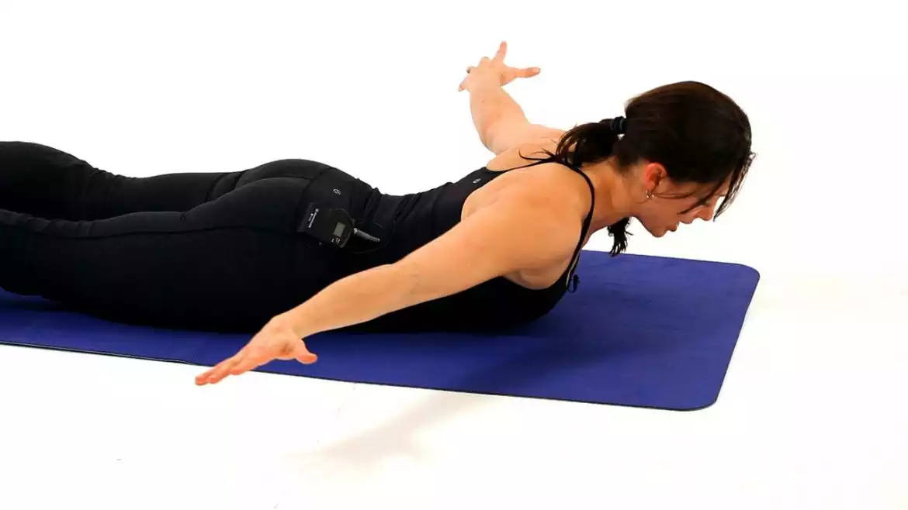
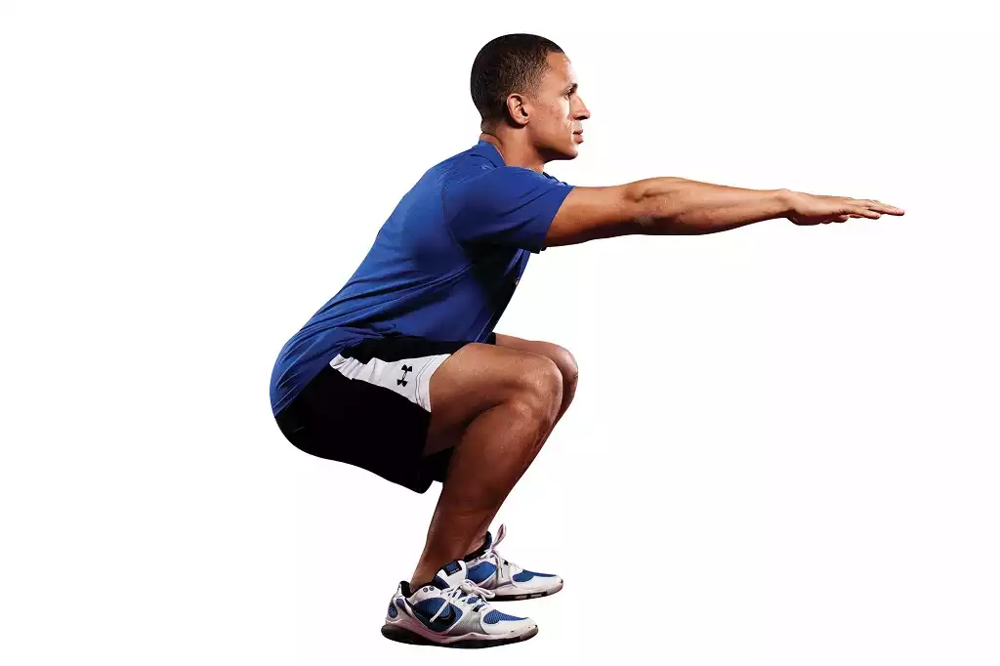

Занятия спортом

Для поддержания ЗОЖ не требуется изнурительных тренировок (они как раз противопоказаны), многочасовых занятий в спортзале, посещения нескольких спортивных клубов и участия в соревнованиях. Достаточно ежедневно сделать утреннюю гимнастику. А потом в течение рабочего дня отвлекаться от работы и прохаживаться.
Также хорошо влияют на здоровье занятия в спортзале с тренером 2-3 раза в неделю, посещение танцев, плаванье в бассейне.
Перед первыми тренировками обязательно проконсультируйтесь со специалистом. Не всегда спорт даже при постепенном повышении нагрузок приносит пользу.
Идеальными видами физических нагрузок являются ходьба, плавание, велоспорт, бег и игровые виды спорта. Остальные же типы упражнений чаще всего используют как часть всей общеукрепляющей программы. Некоторые люди занимаются в интенсивном режиме, чтобы увеличить свою мышечную массу, либо же укрепить сердечно-сосудистую или дыхательную системы.
Физическая форма не подразумевает одну лишь мышечную силу. Она означает избавление от лишнего веса, улучшения самочувствия, придания жизненных сил. И добиться этого можно выполняя физические упражнения того или иного типа. Самый ощутимый эффект от тренировок – увеличение тонуса в мышцах. Даже если нагрузки не влияют на мышцы, то все равно напряжение в них присутствует, что свидетельствует про улучшение физической формы.
Физические упражнения противопоказаны маленьким детям, тяжело больным и инвалидам, хотя упражнения для улучшения кровообращения и дыхания полезны всем. Для детей достаточно того, что они играют со сверстниками в активные игры. Если же они этого не делают, то надо способствовать их активному времяпровождению. Для школьников необходимость физических нагрузок крайне велика, так как у них формируется мускулатура и остальные системы органов.
Типы упражнений:
Изотонические (сокращение и расслабление мышц) – развивают силу, мышечный тонус, сердце, легкие, способствуют снижению веса. Объем мышц увеличивается лишь при крайне больших нагрузках. При них вы преодолеваете либо собственный вес, либо вес постороннего предмета, например, при поднятии тяжестей. Изометрические (постоянное напряженное состояние мышц) – развивают мышечную силу, нагрузка на сердце. При них разрабатываются мышцы либо на недвижимых предметах, либо сопротивляясь другой мышечной энергии. Так как этот тип не включает развитие гибкости и работу сердца и легких, то лучше дополнять занятия аэробными нагрузками. Калистенические (гимнастические упражнения) – развивают выносливость тела и гибкость суставов. Различные гимнастические упражнения, такие как нагибания в стороны, подпрыгивания, приседания, бег на месте. Очень важно, чтобы занимаясь физкультурой, вы получали удовольствие от этого. Лучше иметь стимул, который будет толкать вас вперед. Упражнения лучше выполнять под любимую музыку. Сначала вам, конечно, будет тяжело, но вскоре вы почувствуете пользу и увидите результаты своей работы, что будет стимулом к вашим дальнейшим занятиям.Здоровья и успехов вам!
Подъём колена к локтю
Коснитесь локтем противоположного колена, чередуя стороны. Выполняйте упражнение в своем темпе. Попробуйте выполнить упражнение в течение 1–2 минут с перерывом на отдых в течение 30–60 секунд и повтором до 5 раз. Это упражнение способствует работе сердца и увеличивает частоту дыхания.
Планка
Уверенно обопритесь на предплечья, удерживая локти под плечами. Сохраняйте высоту положения бедер на уровне головы. Задержитесь в этом положении на 20–30 секунд (или более продолжительное время, если возможно), делая перерывы по 30–60 секунд и повторяя цикл до 5 раз. Это упражнение способствует укреплению мышц живота, рук и ног.
Укрепление мышц спины
Прикоснитесь к ушам кончиками пальцев и поднимите верхнюю часть корпуса, удерживая ноги на полу. Опустите верхнюю часть корпуса. Выполняйте это упражнение 10–15 раз (или более), делая перерывы по 30–60 секунд и повторяя цикл до 5 раз. Это упражнение способствует укреплению мышц спины.
Приседания
Поставьте ноги на ширине бедер. Стопы слегка направлены в сторону. Согните колени настолько, насколько вам удобно, плотно прижимая пятки и удерживая колени над стопами (не уводя их вперед). Сделайте присед и выпрямитесь. Выполняйте это упражнение 10–15 раз (или более), делая перерывы по 30–60 секунд и повторяя цикл до 5 раз. Это упражнение укрепляет мышцы ног и ягодиц.

Яковлев Антон